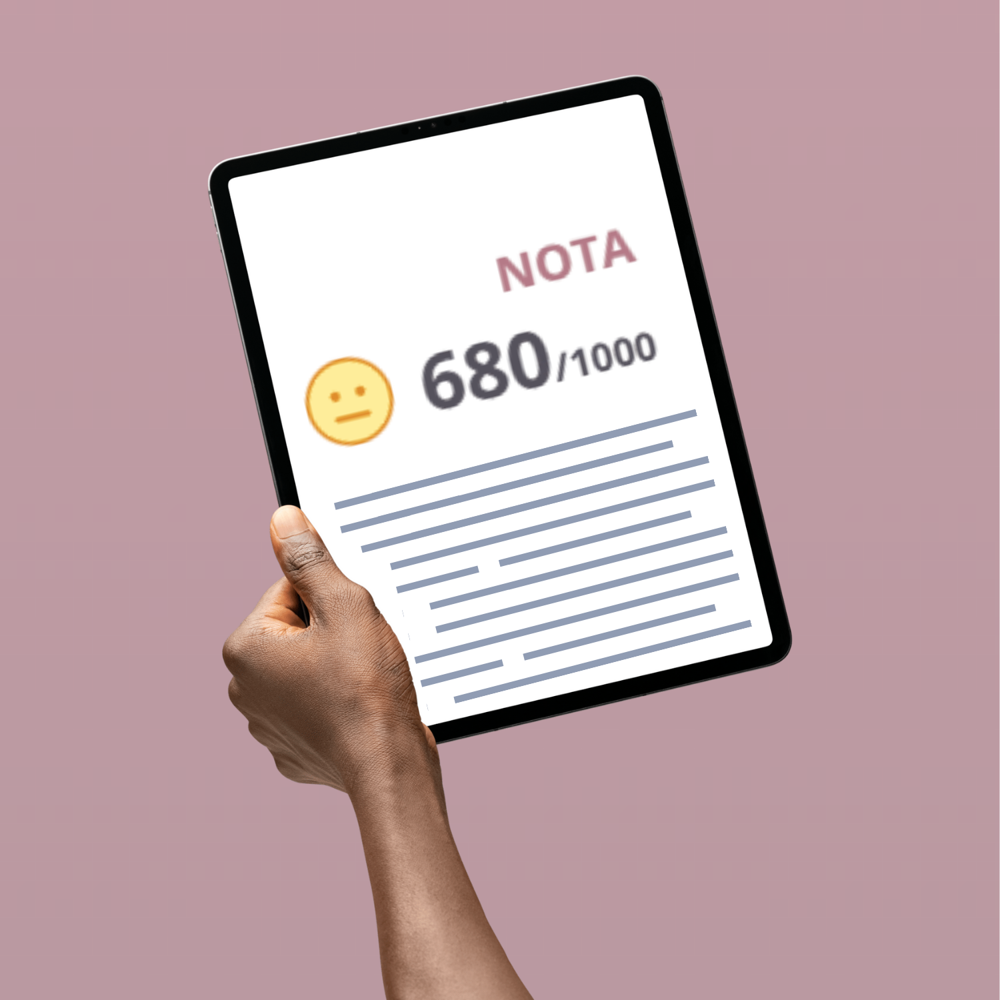
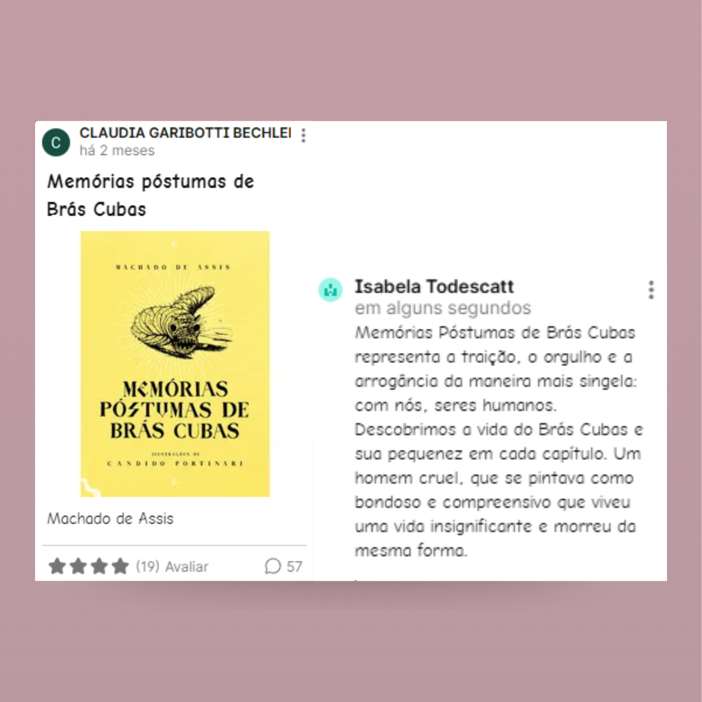
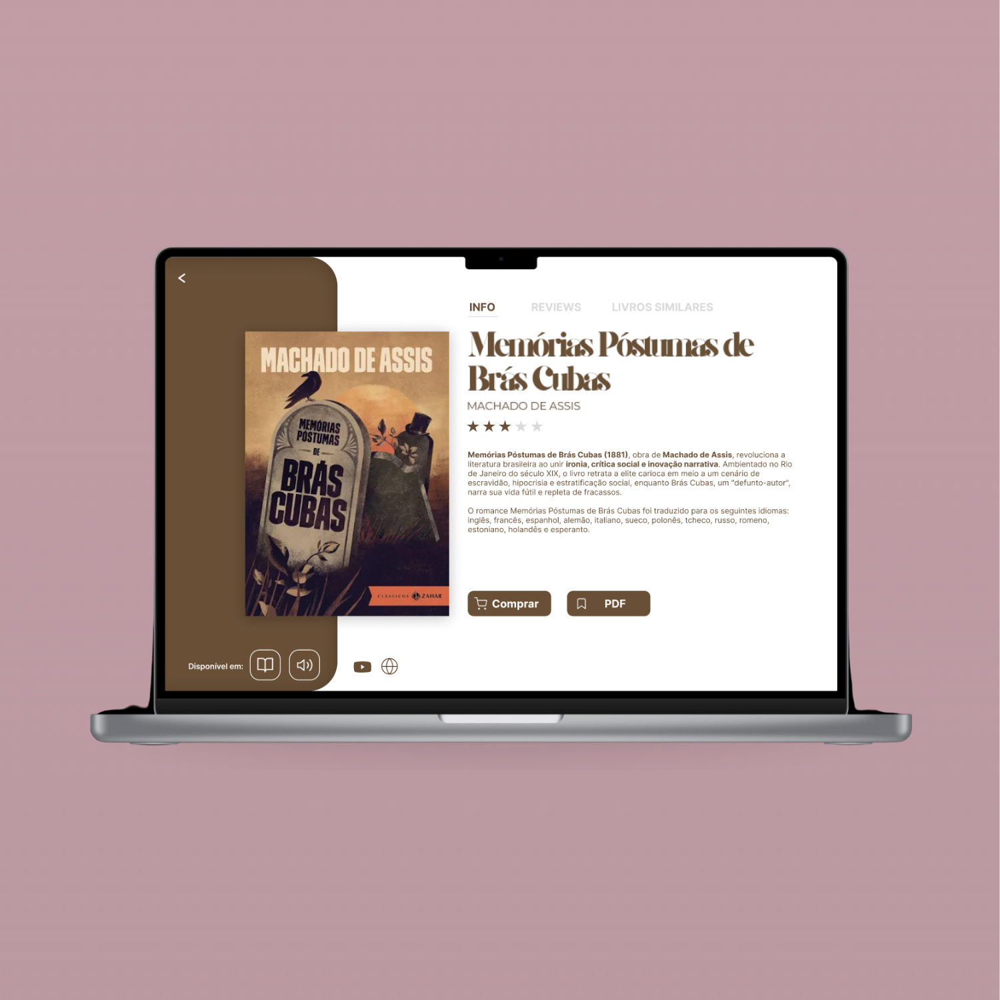
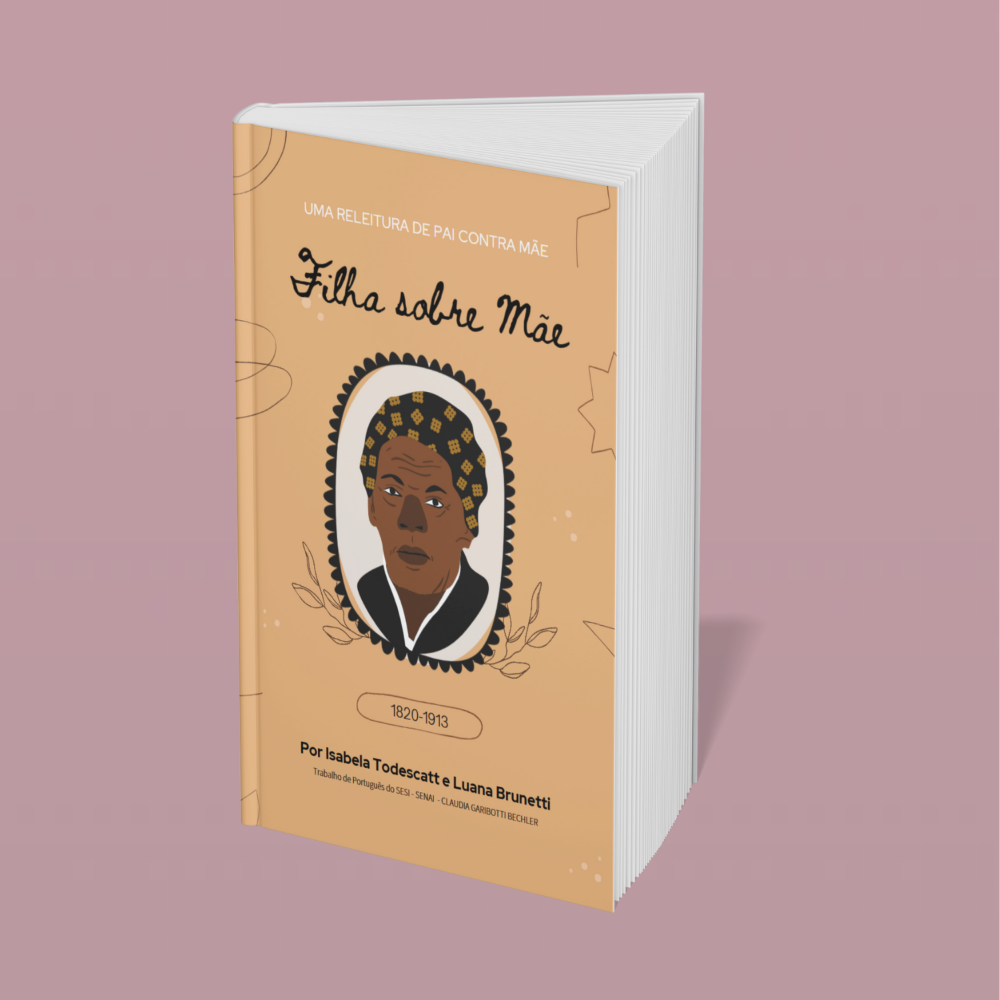
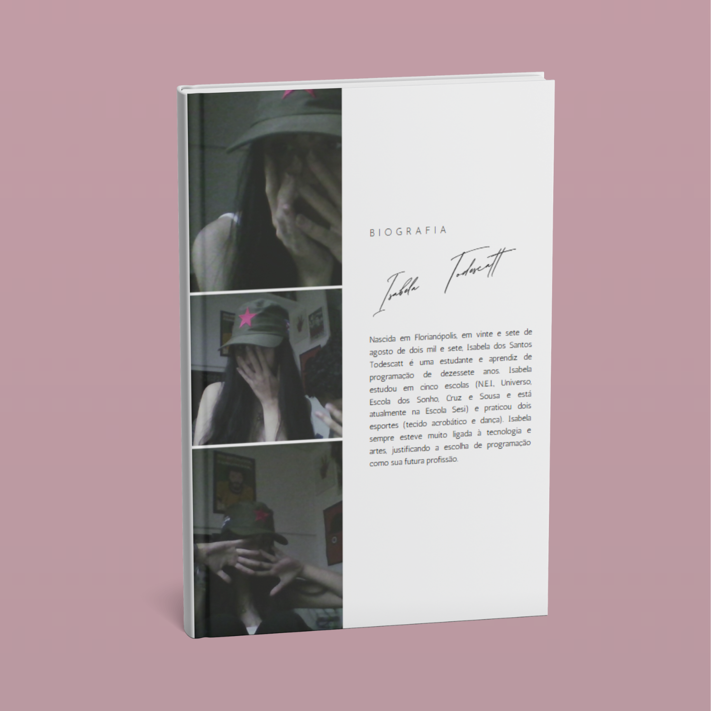
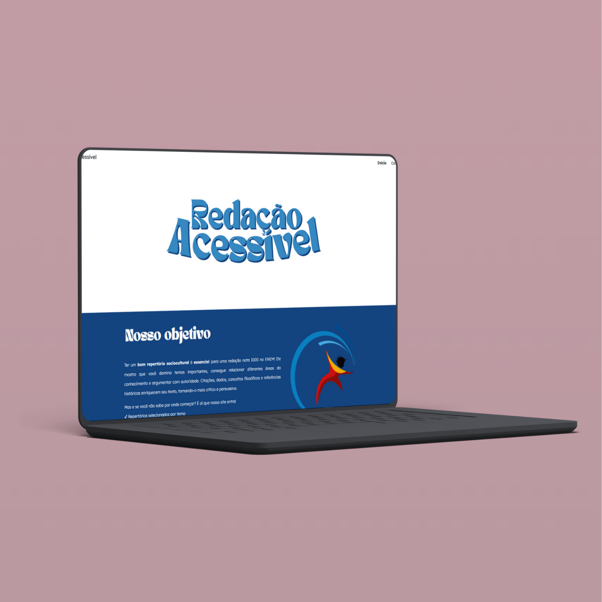
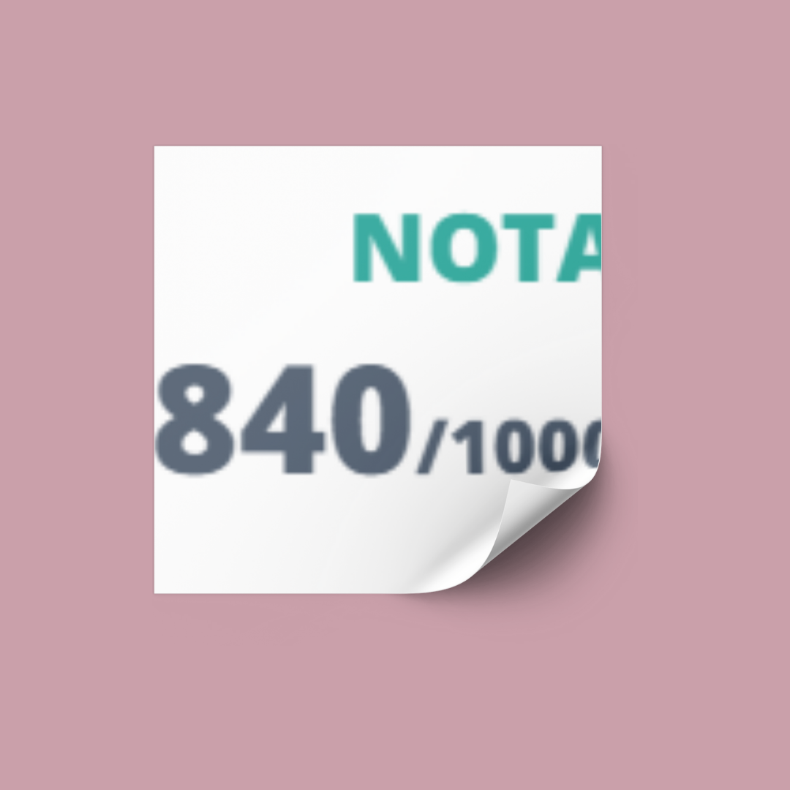
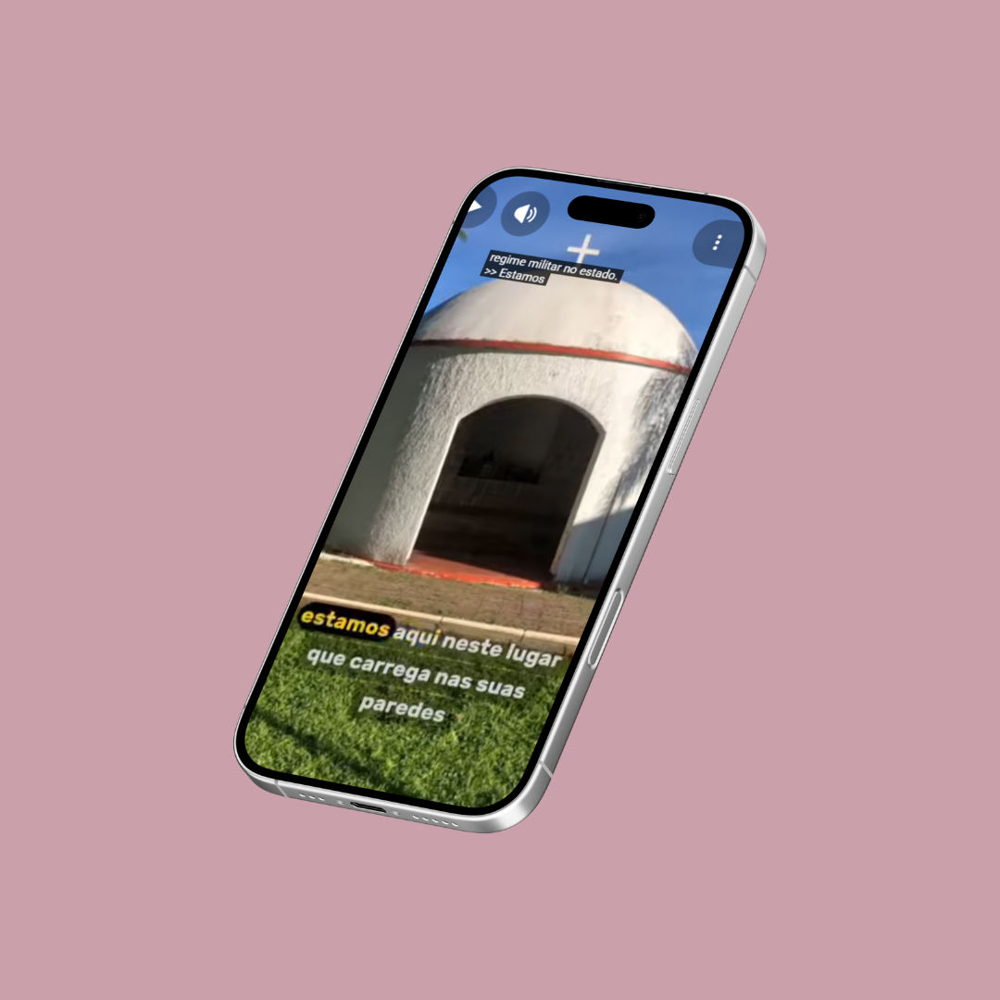
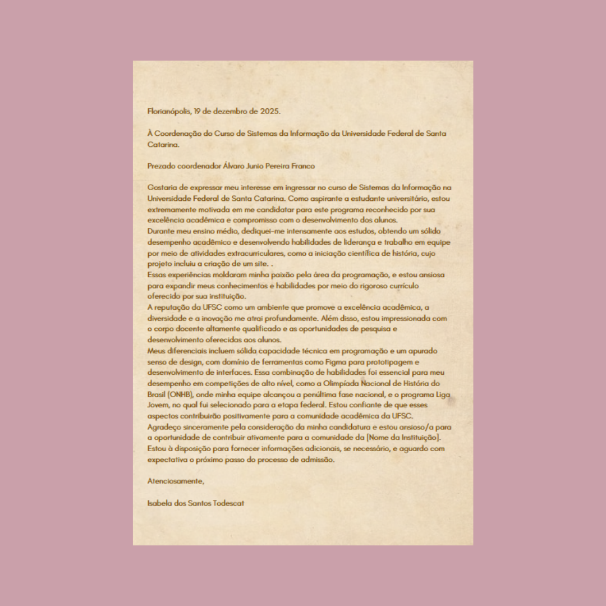

1º Trimestre

Redação Online
Foi necessário a realização de uma redação com o tema "Desafios Para Inclusão Social por meio dos esportes no Brasil"

Padlet
Realizamos um comentário sobre o livro "Memórias Poóstumas de Braz Cubas" na plataforma Padlet.

Revista Literária
A cada livro que lemos para o vestibular da UFSC, adicionamos atividades e uma descrição sobre ele em um projeto de site. O objetivo é criar um banco de dados que possa ser utilizado para futuro estudo.

Reconto da obra "Pai contra mãe"
Realizamos em duplas a criação de uma história baseada no ponto de vista da mãe, tendo como inspiração o conto "Pai contra mãe".

Biografia Pessoal
Componemos uma biografia em terceira pessoa sobre nós mesmos, destacando nossas experiências e características pessoais.

Site "Repertório para o Enem"
Criamos um site no Google Sites, que reune diversas fontes de informação (sites de notícias, canais do Youtube, podcasts, livros, filmes, séries etc), e que está disponível para os alunos de terceiro ano.
2º Trimestre
Revista Literária
A cada livro que lemos para o vestibular da UFSC, adicionamos atividades e uma descrição sobre ele em um projeto de site. O objetivo é criar um banco de dados que possa ser utilizado para futuro estudo.
Redação Online
Foi necessário a realização de uma redação com o tema "Alternativas para reduzir a vulnerabilidade dos jovens frente aos golpes virtuais no Brasil"

Que Tipo De Arte Você Consome? - Inglês
Atividade que consistia criar um canva sobre os tipos de arte que consumimos, como música, filmes, séries, livros, jogos, entre outros, descrevendo nossos gostos e preferências em inglês.
3º Trimestre

Red1000
Realização de uma redação disserto-argumentativa com o tema "Como combater a cultura do cancelamento no Brasil contemporâneo?"

Reel / TikTok sobre a obra de Salim Miguel
No projeto, fui responsável pela edição e finalização do Reel/TikTok sobre a obra de Salim Miguel. Minha atuação concentrou-se em transformar o material bruto em um conteúdo dinâmico, com foco no ritmo, trilha sonora e legendas para engajar o público e transmitir o impacto da narrativa literária.

Carta de Intenção
Redigi uma carta de intenção seguindo os critérios da UFSC, articulando de forma clara e estratégica minha trajetória, interesses acadêmicos e motivações para o curso escolhido. O foco foi demonstrar alinhamento entre minha formação pessoal, o projeto da universidade e a contribuição que pretendo oferecer à área.